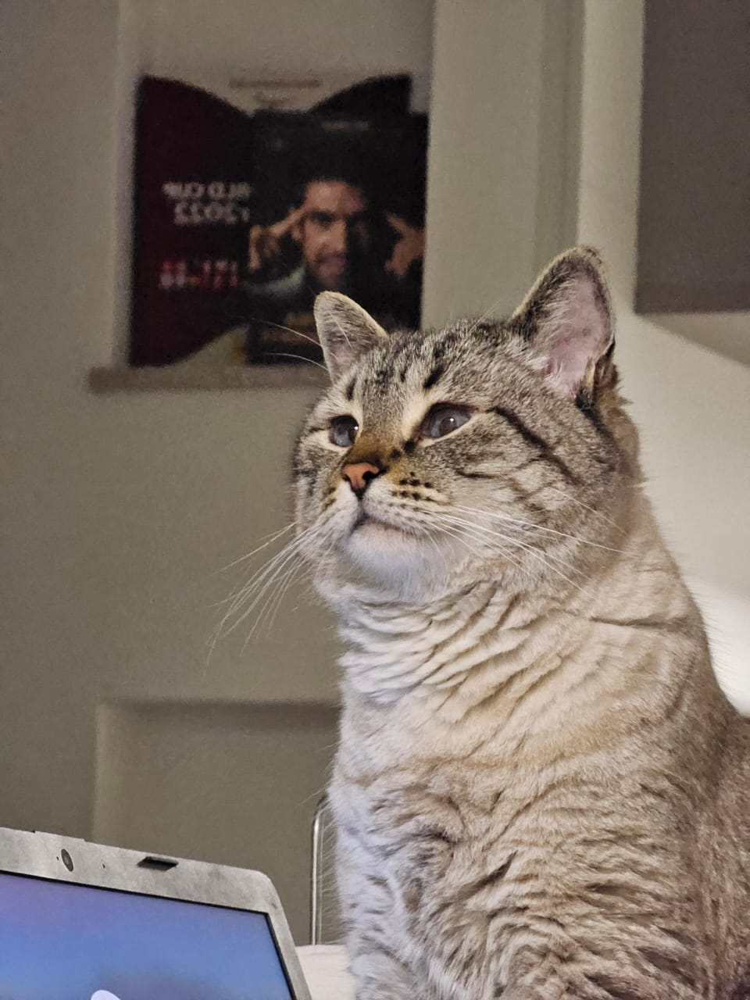
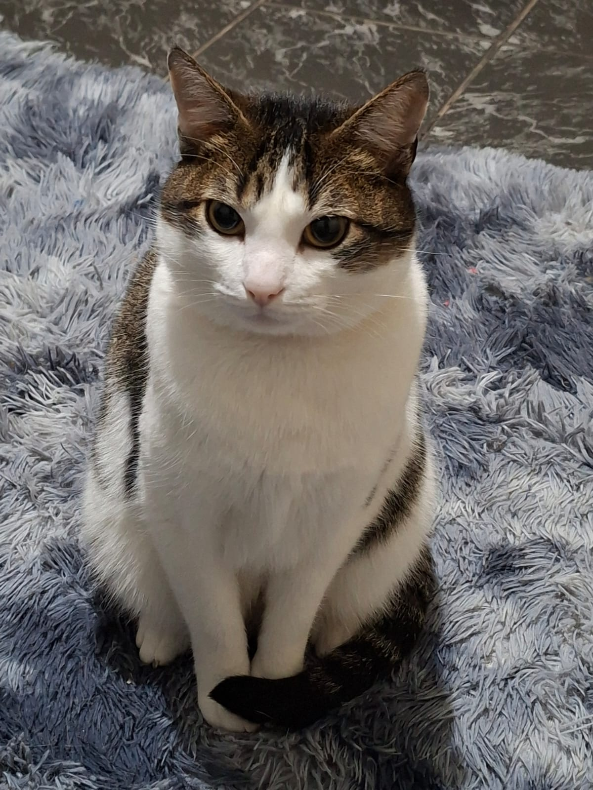
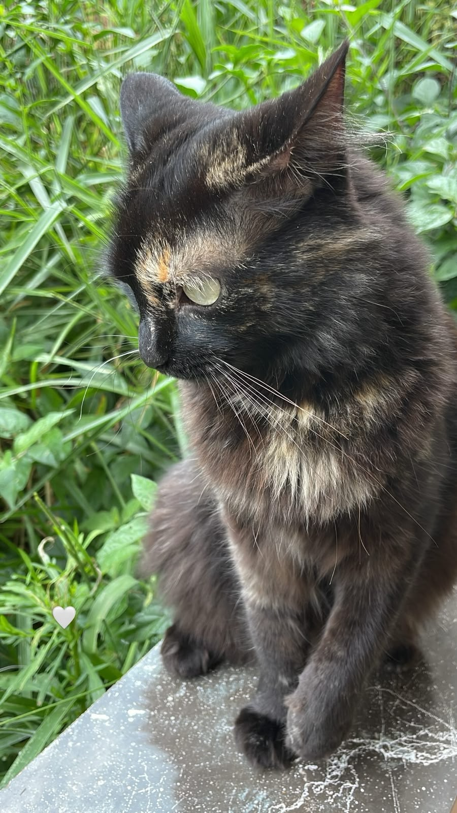

Pets Perdidos

Perdido
Luna
Rio Grande da Serra - 10/11

Achado
Mauá - 15/11

Perdido
Gato
Mauá - 08/11

Perdido
Abel
Santo André - 05/11

Achado
Ribeirão Pires - 02/11

Achado
Rio Grande da Serra - 30/10